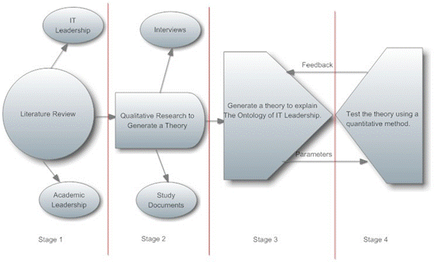
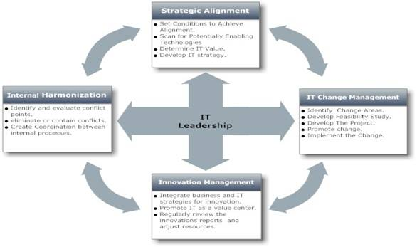
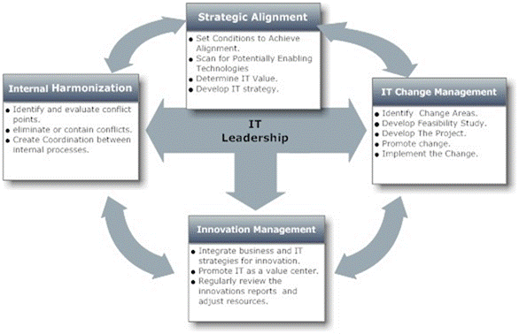

Paper Title :
Developing a Framework for Exploring the Ontology of Information Technology (IT) Leadership:
Toward an Integrated Theory of IT Leadership
Abstract
Leaders and managers who work in IT environment face challenges common to all academic and business leaders: rapidly changing technology, shrinking budgets, policy and legislative changes, globalization, private sector competition, a changing student population, and much more. Successful IT leaders must have the talents, qualities, perspectives, and political skills to support the institutional goals, strategic directions. In addition, they must be aware of trends in IT field and their implications over higher education. This research is an implication of the debate surrounding the current, widely accepted concept of IT leadership. Indeed, this concept is becoming less useful for demystifying leadership in IT organizations. In fact, there is a tendency amongst researchers in IT Leadership area to depict IT Leader as super intelligent, strategist, and a noble man. To illustrate, political leadership influenced our conceptualization of IT Leadership. Accordingly, the further development of IT leadership theory require for a further understanding of the ontological aspects of IT leadership. Based on a qualitative methodology, the research finds an alternative model for explaining the ontology of IT Leadership; this model is based on four principles. To improve the validity of the framework, the research tests it through a quantitative method. Arguably, these frameworks improve our understanding of IT leadership and stimulate the dialectical development of an integrated theory of IT Leadership.
Author
OSAMA ALSHAREET
University of Sunderland,
UK
Paper Transcript of Paper Titled :
Developing a Framework for Exploring the Ontology of Information Technology (IT) Leadership:
Toward an Integrated Theory of IT Leadership.
Developing a Framework for Exploring the Ontology of Information Technology (IT) Leadership:
Toward an Integrated Theory of IT Leadership.
OSAMA ALSHAREET, University of Sunderland, UK
Abstract— Leaders and managers who work in IT environment face challenges common to all academic and business leaders: rapidly changing technology, shrinking budgets, policy and legislative changes, globalization, private sector competition, a changing student population, and much more. Successful IT leaders must have the talents, qualities, perspectives, and political skills to support the institutional goals, strategic directions. In addition, they must be aware of trends in IT field and their implications over higher education. This research is an implication of the debate surrounding the current, widely accepted concept of IT leadership. Indeed, this concept is becoming less useful for demystifying leadership in IT organizations. In fact, there is a tendency amongst researchers in IT Leadership area to depict IT Leader as super intelligent, strategist, and a noble man. To illustrate, political leadership influenced our conceptualization of IT Leadership. Accordingly, the further development of IT leadership theory require for a further understanding of the ontological aspects of IT leadership. Based on a qualitative methodology, the research finds an alternative model for explaining the ontology of IT Leadership; this model is based on four principles. To improve the validity of the framework, the research tests it through a quantitative method. Arguably, these frameworks improve our understanding of IT leadership and stimulate the dialectical development of an integrated theory of IT Leadership.
Keywords-component; Ontology; Information Technology; Information Technology Leadership; Strategic Alignment; Change Management; Innovation Management.
Introduction
The introduction is divided into three sub-sections. Firstly, Section A. contains background to the research. Secondly, section B. explores the relation between strategic leadership and IT, section C. explores the impact of IT leadership over organizations while section D. explores the relation between higher Education institutes and leadership.
Background
Information systems (IS) and Information Technology (IT) leadership have evolved over the past decade (Conger 1999 ; Severson, Blum-DeStefano and Asghar 2013). Despite of the directed attention in recent years (Conger and Pearce, 2003;Drago-Severson. 2012), little empirical research on IT leadership has been done. This research aims to identify the relation between leadership and innovation in IT organizations. The research contributes to a continuing research for examining the characteristics and mechanisms of innovative IT leadership.
Leaders have to act as agents of change (Murphy, 2002), egging the rest of the executives on to follow. Fry (2003) regarded leadership as a motivation to change and concluded that in order to motivate employees, leaders should strengthen the fundamental values and transfer them to executives through regulations and their personal actions. Studies have shown (Kirkman and Lowe, 2006; Joshi, Lazarova, and Liao 2009; Marinova, Moon, Dyne, 2010) that leaders with merits such as motivation, and innovative stimulation are able to change the executives’ values by reinforcing both personal and organisational change and inspiring their executives to innovate.
Sitkin et al.(2001) developed a generic model of leadership; in fact, they have distinguished between leadership and management, although the same manager can hold both kinds of responsibilities simultaneously.
According to Sitkin et al.(2001), there are six keys to innovative leadership in technological environment, each of which has its effects on organizational performance: relational leadership engenders a sense of trust and justice, personal leadership fosters loyalty, inspirational leadership elevates higher aspirations, contextual leadership guides community building, supportive leadership urges employees to develop self-discipline, and stewardship develops an internalized sense of responsibility.
Levinson (1976) concedes that there are implicit contracts between employees and organizations. These unwritten contracts are obligatory, and constitute the behavior and balance within the organization. Moreover, if an employee breaks that contract, the other stakeholders react by a justified act of punishment. A good leader must detach these kinds of relations amongst the employees. Indeed, with the absence of a resourceful leader, these relations could flourish and hinder the organizational performance. Additionally, leaders must promote their vision and explain it to the involved parties (Li, Tan and Teo, 2012).
Strategic Leadership and IT
Strategic leadership refers to a manager’s ability to realize a strategic vision for the institution (Hunter, 2010), and to inspire and convince others to embrace that vision. Strategic leadership in context of IT can also be defined as taking advantage of IT resources in supporting business strategy, and adding a value to the business (Hanna, 2011).
Managing change is decisive for IT divisions(Chou and Chou, 2009) and eventually there is a growing demand for strategic leaders in IT who not only provide guidance and direction, but who can also realize business values and implement change.
The Impact of IT Leadership over Organisations
There is a tendency amongst researchers to consider information systems leadership as a main concern in IT Management (Dong, 2006; Nakayama and Sutcliffe, 2008). With the complexity and contextual factors behind the success of information systems within an organizational context, leaders openness to change is considered as one of the main derivatives behind innovation in any IT organization. Indeed, the worst thing a leader can practice is believe that they know everything, which is one of the most common practices of information systems leaders (Conger 1999 and Murphy, 2002).
The implications of this believe is the fact that leaders behave as they are really know everything. Unfortunately, this practice bulks the development of new solutions and ideas. Accordingly, the possibility for change and innovation becomes difficult. Additionally, it is not enough for innovative leaders to be only open to change; they must also possess the ability to persuade their staff to understand why change is critical to their success.
Higher Education Institute (HEI) and IT Leadership
Being a strategic leader in academia requires appreciating business priorities (Lynn and Baird, 2010) and their strategic and tactical goals, besides having a clear vision on how IT can contribute to academic strategy. Working in the context of the institutional strategy is one of the key elements of strategic leadership for IT leaders.
Academic leadership refers to leadership in an academic environment or institutions. Indeed, academic institutions have different qualities than other business organisations. Business organisations are derived by the need to maximise shareholder value. On the other hand, public sector organisations are derived by the need to maximise stakeholder’s value, which includes community as a whole. In academic settings, the beneficial stakeholders are such as community, students, and staff. Thus, the stakeholders relations in academic settings are more diverse. In fact, RAMSDEN (1998) and HARMAN (2002) have developed models to address these issues.
Methodology
This section is divided into two sub-sections. Firstly, Section A. explains the limitations of this research while section B. explains the conceptual framework in four detailed stages.
Limitations
This is a mixed research study. Hence, the organization of this methodology makes it possible for other researchers to authenticate the results or to add a contribution to the basic premise of the study (Creswell, 1998). However, the qualitative approach makes it difficult to generalize the findings from business perspective (Li et al., 2009). Hence, testing it through questionnaire is important to insure that the findings of this study are not limited to the specific observations of the researcher and perceptions of the participants.
Conceptual Framework
As indicated in figure 1, the conceptual framework is divided into four stages:

the conceptual framework for the research.
Stage 1, Literature review:
This stage aims to provide a critical overview to IT Leadership area and to provide a solid foundation for the research.
Stage 2, Qualitative Research to Generate a Theory for Explaining the Ontology of IT Leadership:
The sources of information for this study are literature, face to-face interviews, and written artifacts of the institution. Naturally, researchers use these sources to identify and explore the various characteristics of a successful IT Leadership. Cooper and Schindler (2006) identified measurement as a method of identifying events that can be assigned symbols to allow the researcher to understand the event and making predictions.
The selection process of the sample population focused on the investigation of the current environment (Feng et al., 2014). The researcher selected the target population from six Jordanian Universities. Interviewees consisted of IT Managers, IT faculty members, and staff members for a total of 30 interviewees. They were selected according to their experience and knowledge of the organizational mission or purpose (Miles and Huberman, 1994).
Each participant signed a consent to act as a research subject. Indeed, the consent form is included in Appendix- A. The respondents Identity were concealed to eliminate confounding factors. In addition, the interview questions were sent to each participant prior to the interview date to facilitate and manage the interview process.
Stage 3, Generate a Theory to Explain the Ontology of IT Leadership:
This stage is divided into three sub-stages:
Basic Analysis: continues analysis and data gathering until the research topic is understood.
Memoing: recording important data including the researcher notes and analysis.
Developing Category Systems: divide the data into meaningful units, find associations between them, and generate the final categories, which are shown in figure 2.
Stage 4, Test the Theory Using a Quantitative Method:
After forming the theoretical model, the research went to verify the theoretical model, which is presented in figure 2. To test the hypotheses, the researcher conducted an electronic questionnaire, which is useful when contacting with groups of people in various locations, or those who might fear engaging in face-to-face questionnaires (Trujillo, 2009). A sample of the online form is included in Appendix-B. An assessment of the identified factors in the conceptual models was included in the questionnaire, which is based on Linkert scale (1 to 4). The coefficient cronbach's (alpha) was used to assess the reliability of the questionnaire.
Results and Analyses
This section contains the results of the third and fourth stage in the methodology. These results are as follows:
Stage 3 results, Generate a Theory to Explain the Ontology of IT Leadership:
Figure 2 include explanations of the final categories and their associations.

a Framework for explaining the ontology of Successful IS Leadership.
Obviously, IT leadership requires focusing resources according to these principles. The next section tests this framework.
Stage 4 Results, Testing the Theory Using a Quantitative Method:
To test the framework identified in figure 2, it is important to note that the researcher formed twenty questions to measure IT division success or failure. These questions are based on the theoretical framework in figure 2. The research sample contained 900 IT employees in various sectors and in different levels that existed in 55 organizations. Accordingly, 480 questionnaires were returned completed while 44% of participants where from academic sector and 56% from business sector. The results show that 18 IT divisions were classified to be successful in delivering IT services while 29 were classified as failing.
At the same time, eight were classified as “in conclusive” and excluded from the classification. The results in table one and two lead the research to infer the following:
a statistical representation of the impact of IT leadership on Successful IT divisions.
Sector |
Strategic Alignment |
IT Change Management |
Innovation Management |
Internal Harmonization |
Mean |
Mean values |
Mean values |
Mean values |
Mean values |
Mean values |
|
Academic Sector |
3.13 |
2.76 |
4.15 |
4.31 |
3.58 |
Business Sector |
4.34 |
3.74 |
4.27 |
4.23 |
4.14 |
a statistical representation of the impact of IT leadership on Failed IT divisions.
Sector |
Strategic Alignment |
IT Change Management |
Innovation Management |
Internal Harmonization |
Mean |
Mean values |
Mean values |
Mean values |
Mean values |
Mean values |
|
Academic Sector |
1.27 |
1.56 |
1.32 |
2.14 |
1.44 |
Business Sector |
1.17 |
2.41 |
2.56 |
1.47 |
1.97 |
In accordance with the theoretical framework, table one shows that successful IT organizations have high rate of Strategic Alignment, IT Change Management, Innovation Management, and Internal Harmonization. On the other hand, table two shows that failing IT organizations suffer from a significant drop of the same rates.
Examining Strategic Alignment values in both tables, the values show that the level of strategic alignment always correlates with the level of organizational success in both academic and business sectors. Indeed, research literature shows that innovating in contrary to the business strategy causes failure to IT divisions (Suh et al., 2013; Chiang and Nunez 2013). Hence, this result highlights the decisive rule of aligning IT strategy with organizational strategy. Accordingly, figure 3 represents a modification to the framework identified in figure 2. Indeed, this modification reflects the emphasis on the impact of strategic alignment in IT leadership.
Table one show that the level of strategic alignment in business sector is relatively higher than academic sector. To illustrate, research approves that high competition requires high level of strategic alignment. Accordingly, academic environment are exposed to less competition comparing to business environment.
IT change management (for business organizations) is higher in both tables; indeed, in dynamic business environment, there is always a need to make quick changes to strategy; and consequently, restructure the organisation.
Table two shows that failing organizations have an acceptable level of IT Change Management and Innovation Management. However, this is not enough to compete and survive in business environment. Especially, with the absence of proper alignment between IT strategy and organizational strategy.
Conclusions
In this research paper, the researcher explored the ontology of leadership in IT organizations. Naturally, the research on strategic leadership is still under exploration. A theoretical model of important characteristics of successful IT leadership was developed and tested using data from different organizations. Accordingly, the research concluded with the following:
Strategic Alignment is the cornerstone of successful IT leadership.
Competition in business environment is more fierce and intense comparing to competition in academic environment.
Results show that nonalignment between IT strategy and organizational strategy causes unnecessary waste of resources.

Successful IT leadership does not require having phenomenal characteristics. Conversely, it requires focusing resources toward the characteristics identified in figure 3.
The area of IT leadership requires further research toward developing a holistic understanding of the ontological aspects of IT leadership.
Modification for the Framework to Reflect the Importance of Strategic Alignment.
REFERENCES
Chiang, I. R. and Nunez, M. A. (2013). Strategic alignment and value maximization for IT project portfolios. Inf. Technol. and Management, 14(2), pp. 143-157. DOI=10.1007/s10799-012-0126-9 http://dx.doi.org/10.1007/s10799-012-0126-9
Chou, D. C. and Chou, A. Y. (2009). Integrating change management and change auditing into information technology consulting practice. Int. J. Inf. Syst. Chang. Manage. 4(1), pp. 15-41. DOI=10.1504/IJISCM.2009.030049 http://dx.doi.org/10.1504/IJISCM.2009.030049
Conger and Pearce, (2003). A landscape of opportunities: future research on shared leadership. In: Pearce, C.L., Conger, J.A. (Eds.), Shared Leadership: Reframing the Hows and Whys of Leadership, Sage Publications, Thousand Oaks, CA. pp. 285-304.
Conger, (1999). Charismatic and transformational leadership in organizations: an insider's perspective on these developing streams of research. Leadership Quarterly. 10 (2). pp. 145-179.
Cooper, D.R., Schindler, P.S., (2006). Business Research Methods, 9th edition. McGraw-Hill, Irwin, NY.
Creswell, J. 1998. Qualitative inquiry and research design: Choosing among five traditions. Thousand Oaks, CA: Sage Publications, Inc.
Dong, L. (2006). Modelling leadership influence on information systems implementation effectiveness. Int. J. Inf. Syst. Chang. Manage. 1(4), pp. 439-452. DOI=10.1504/IJISCM.2006.012049 http://dx.doi.org/10.1504/IJISCM.2006.012049
Drago-Severson. (2012). The missing reciprocity: Exploring the nature of leadership capacity. In Proceedings of the Annual Meeting of the American Educational Research Association, Vancouver, Canada
Feng J., Bian J., Wang T. , Chen W., Zhu X., and Liu T. (2014). Sampling dilemma: towards effective data sampling for click prediction in sponsored search. In Proceedings of the 7th ACM international conference on Web search and data mining (WSDM '14). ACM, New York, NY, USA, pp. 103-112. DOI=10.1145/2556195.2556242 http://doi.acm.org/10.1145/2556195.2556242
Hanna, N. K. and Knight, P. T. (2011). National Strategies to Harness Information Technology: Seeking Transformation in Singapore, Finland, the Philippines, and South Africa. Springer Publishing Company, Incorporated.
Hunter, M. G. (2010). Leadership and Processes: A Review of Strategic Initiatives in the Use of Information Technology. Int. J. Strateg. Inf. Technol. Appl. 1(2), pp. 82-92. DOI=10.4018/jsita.2010040105 http://dx.doi.org/10.4018/jsita.2010040105
Joshi, A., Lazarova, M. B. and Liao, (2009). H. Getting Everyone on Board: The Role of Inspirational Leadership in Geographically Dispersed Teams, Organization Science, 20 (1), pp.240-252.
Kirkman BL, Lowe KB, Gibson CB .(2006). A quarter century of culture's consequences: A review of empirical research incorporating Hofstede's cultural values framework. J. Internat. Bus. Stud. 37(3), pp. 285-320.
Levinson H. 1976, `Appraisal of what performance?' Harvard Business Review, 54(4).
Li H., Zhao P., Wang Y., and Wang G. (2009). A Qualitative Research of Tuangou: Modes, Characteristics and Roles of the New E-Business Model. In Proceedings of the 2009 International Symposium on Information Engineering and Electronic Commerce (IEEC '09). IEEE Computer Society, Washington, DC, USA, pp.750-753. DOI=10.1109/IEEC.2009.163 http://dx.doi.org/10.1109/IEEC.2009.163
Li Y., Tan C., and Teo H. (2012). Leadership characteristics and developers' motivation in open source software development. Inf. Manage. 49( 5 ), pp. 257-267. DOI=10.1016/j.im.2012.05.005 http://dx.doi.org/10.1016/j.im.2012.05.005
Lynn N. Baird. (2010). Colliding Scopes: Seeing Academic Library Leadership Through a Lens of Complexity. Ph.D. Dissertation. University of Idaho, Moscow, ID, USA. Advisor(s) Laura B. Holyoke. AAI3455099.
Marinova SV, Moon H, Van Dyne L .(2010). Are all good soldier behaviors the same? Supporting multidimensionality of organizational citizenship behaviors based on rewards and roles. Human Relations 63(10). pp.1463-1485.
Marshall, S. P., (1995). Schemas in Problem Solving. Cambridge University Press, Cambridge.
Miles, M. B. and Huberman, A. M. (1994). Qualitative data analysis: an expanded sourcebook. Thousand Oaks, California: Sage.
Murphy, J. (2002). Reculturing the profession of educational leadership: New blueprints. In J. Murphy (Ed.). The educational leadership challenge: Redefining leadership for the 21st century pp. 65-82. Chicago, IL: National Society of Education.
Nakayama, M. and Sutcliffe N. G. (2008). The role of leadership decision styles on the use and effectiveness of Information Systems. Int. J. Inf. Syst. Chang. Manage. 3(1), pp. 3-15. DOI=10.1504/IJISCM.2008.019286 http://dx.doi.org/10.1504/IJISCM.2008.019286
Severson D., Blum-DeStefano J., & Asghar, A. (2013). Learning for leadership: Developmental strategies for building capacity in our schools. Thousand Oaks, CA: Corwin/Sage & Learning Forward.
Sitkin, S. B., Long, C. P and Lind, E. A. (2001). The pyramid model of leadership, Durham, NC: Duke University.
Suh, H., Hillegersberg, J., Choi, J. and Chung, S. (2013). Effects of strategic alignment on IS success: the mediation role of IS investment in Korea. Inf. Technol. and Management, 14(1), pp. 7-27. DOI=10.1007/s10799-012-0144-7 http://dx.doi.org/10.1007/s10799-012-0144-7.
Trujillo, A. (2009). Paper to Electronic Questionnaires: Effects on Structured Questionnaire Forms. In Proceedings of the 13th International Conference on Human-Computer Interaction. Part I: New Trends, Julie A. Jacko (Ed.). Springer-Verlag, Berlin, Heidelberg, pp. 362-371. DOI=10.1007/978-3-642-02574-7_41 http://dx.doi.org/10.1007/978-3-642-02574-7_41.
Appendix A: Consent to Act as a Research Subject
Consent to Act as a Research Subject
Osama M. M. Alshareet, a MSC Student at the University of Sunderland, is working on his research paper. He is conducting a research study entitled, “Exploring The Ontology of Information Technology (IT) leadership: a Case Study to Academic and Business Organizations”. The main goal of the research study is to construct a Framework that aims to improve our understanding of IT leadership and guide IT Leaders on how to be successful leaders.
Interviewee:
I, ______________________, a current or former employee in __________, Agree to participate in this research study voluntary, and according to the following conditions:
- I may reject to participate and/or withdraw from the study at any time and without consequences.
- The anonymity of the interviewees and will be preserved and guaranteed.
- The results and implications of the research will be published.
- OSAMA ALSHAREET (researcher) will explain the research to me and answer my questions.
- The interviewee must know the interview conditions in advance (time, length, and place).
By signing this form, I agree that I understand the nature of the study, the implications of participating in it, and the means by which my anonymity will be preserved. My signature on this form also indicates that I give my permission to voluntarily act as a participant in this research study.
Signature of the interviewee __________________ Date _________________
Signature of the researcher ___________________ Date _________________